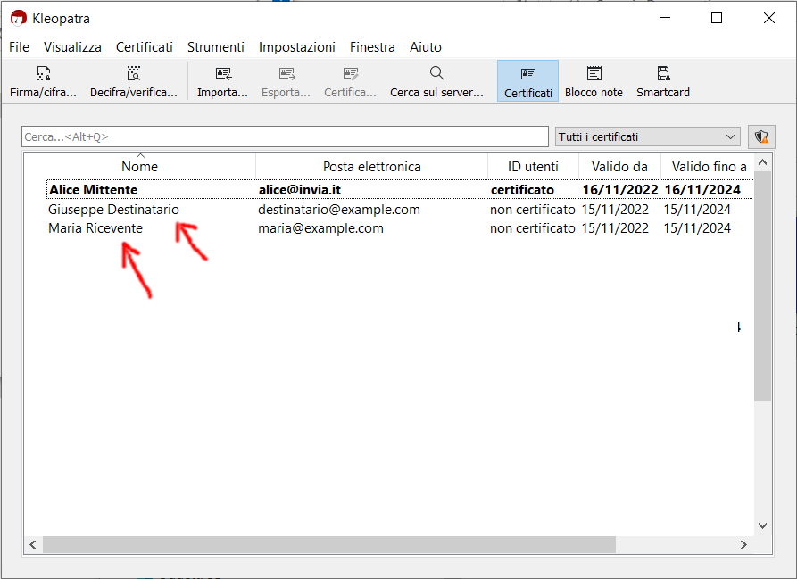
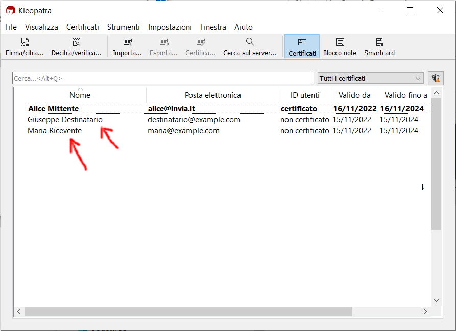

Hai la Chiave Pubblica del Destinatario dei dati? (2/2)
Verifica la presenza di una chiave (NON in grassetto) per ciascun Destinatario dei Dati confidenziali.

Verifica la presenza di una chiave (NON in grassetto) per ciascun Destinatario dei Dati confidenziali.
